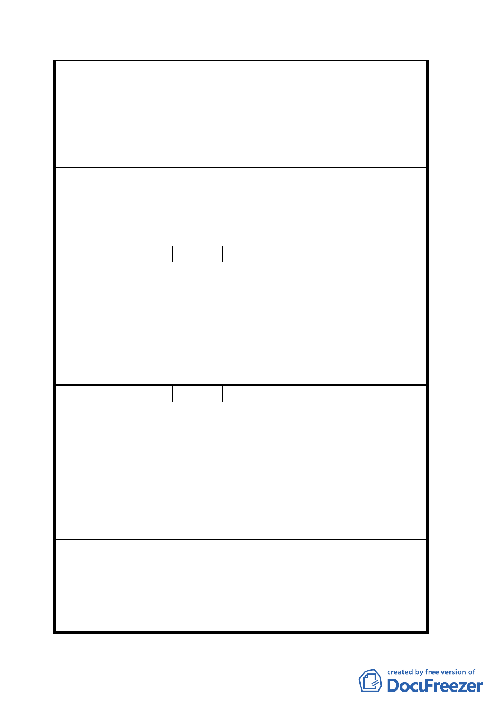

一、希望信義區之健康休閒中心能納入規劃。
二、缺乏綠地應利用多目標公園擴大綠地範圍 A4、A5 區整
合成公園區。
建 議 辦 法 三、希望有捷運接駁公車。
四、應加大住宅容積率。
五、停車場收費應優惠附近居民。
六、A4、A5 區建蔽率改為住二。
一、本案原則通過，其他非屬都市計畫之建議留供將來規
劃建築時參考。
委 員 會 決 二、有關停車場收費應優惠附近居民及希望有捷運接駁公
議 車，因非屬都市計畫範疇，建議留供相關單位參考辦
理。
編 號６
陳情人 鍾坤志
陳 情 理 由 本案規劃過於破碎無法形成都市更新有利周邊發展
集中相關性質用途規劃使管理及區位更明顯有利於週邊居
建議辦法 民
一、本案原則通過。
委員會決
議
二、請市府相關單位（建管處、交通局）處理北醫建築管
理及停車位問題。
三、請市府相關單位通盤檢討双和里及鄰近地區都市計畫
及更新事宜。
編 號７
陳情人 双和里里長 高仁義
一、本里因北醫切斷對外道路，致聯外道路只有 2 處（260
巷及信安街），又因北醫學生在里內到處亂停汽、機
車，致停車問題非常嚴重。
二、北醫佔雙和里 1/3 面積，為使校區完整，市府多次變
陳情理由
更都市計畫將校區內道路移除，致使雙和里對外交通
相當不便，除小藍五至今尚未進入雙和里外，又因北
醫學生之機車數量繁多，已造成雙和里之停車夢魘，
凡此種種，市府即然多次措施獨偏北醫，理當出面要
求北醫對社區之適度回饋。
一、請將雙和里列入保養廠計畫範圍內合併檢討並專案提
高本里老舊建物改建之容積獎勵以利地方發展。
建 議 辦 法 二、請都市發展局出面協調台北醫學院提出對雙和里之回
饋方案。
委 員 會 決 一、本案原則通過。
議 二、請市府相關單位（建管處、交通局）處理北醫建築管
六